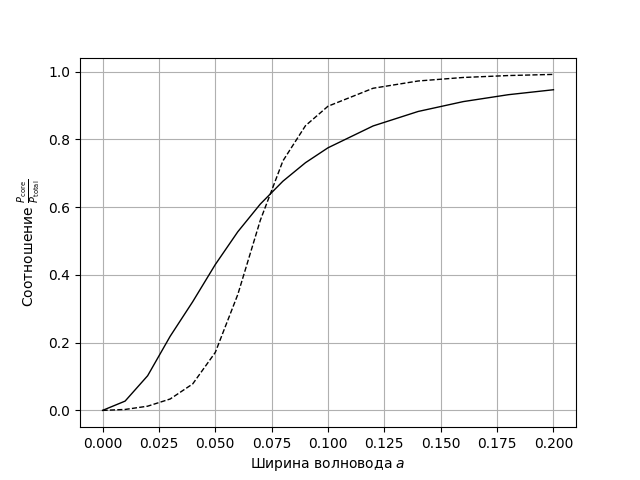

Anisotropic waveguides --- Solution
Y22 (2022) — English translation
A1Find $v$ and $w$ for the first waveguide.1.00
Since the $x$-component of the field is normalized to the value at the center, the linearization of the dependence at the core of the waveguide is $\arccos E_x$. The slope of the resulting straight line is $v$. The linearization of the dependence in the waveguide shell is $\ln E_x$. $w$ represents the slope taken with the opposite sign.
Answer: \[v=1.210,\quad w=3.064\]
A2Express $\varepsilon_x$, $\rho$ and $\varepsilon_z$ in terms of $v$ and $w$. Find $\varepsilon_x$, $\rho$ and $\varepsilon_z$ for the first waveguide.0.40
One possible way to solve ($\bf M1$) is to express $\varepsilon_z$ in terms of $v$ and $w$ as \[\varepsilon_z=\frac{\varepsilon w}{v\tan v}=11.52,\], after which $\rho$ and $\varepsilon_x$ can be expressed in the following way: \[\rho=\frac{\frac{\varepsilon w}{v\tan v}-\varepsilon_2}{\varepsilon_1-\varepsilon_2}=0.57,\\\varepsilon_x=\frac{\varepsilon_1\varepsilon_2}{\varepsilon_1+\varepsilon_2-\frac{\varepsilon w}{v\tan v}}=4.51,\]or ($\bf M2$) as \[\varepsilon_x=\frac{4\pi^2a^2\varepsilon-v^2}{\frac{w^2}{\varepsilon_z}+4\pi^2a^2}=2.72\\\rho=\frac{\frac1{\varepsilon_x}-\frac1{\varepsilon_2}}{\frac1{\varepsilon_1}-\frac1{\varepsilon_2}}=0.20\] Alternative method ($\bf M3$) – find $\varepsilon_x$ by the field difference during the transition from the core of the waveguide to its cladding, i.e. \[\varepsilon_x=\varepsilon\frac{E_x\left\vert_{\tilde x=1-0}\right.}{E_x\left\vert_{\tilde x=1+0}\right.}=5.01,\] from where then express $\rho$ and $\varepsilon_z$ as\[\rho=\frac{\varepsilon_1}{\varepsilon_1-\varepsilon_2}\left(1-\frac{\varepsilon_2}{\varepsilon_x}\right)=0.63,\\\varepsilon_z=\varepsilon_2+\varepsilon_1-\frac{\varepsilon_1\varepsilon_2}{\varepsilon_x}=12.44.\] Alternative methods, logically correct and free of computational errors, are also counted. All methods are considered equivalent and are evaluated equally. If there is a solution in two ways, the second method is evaluated in accordance with $\bf A3$. Note: for $\bf A3$ twice as many points are given, since the presence of a second method for estimating waveguide parameters is valuable from a practical point of view, because allows you to choose a more accurate method.
A3Find $\varepsilon_x$, $\rho$ and $\varepsilon_z$ in another way. Compare your results. In your opinion, which one is more accurate?0.80
Answer: $\bf M1$:\[\varepsilon_z=\frac{\varepsilon w}{v\tan v}=11.52,\\\rho=\frac{\frac{\varepsilon w}{v\tan v}-\varepsilon_2}{\varepsilon_1-\varepsilon_2}=0.57,\\\varepsilon_x=\frac{\varepsilon_1\varepsilon_2}{\varepsilon_1+\varepsilon_2-\frac{\varepsilon w}{v\tan v}}=4.51\] $\bf M2$:\[\varepsilon_z=\frac{\varepsilon w}{v\tan v}=11.52,\\\varepsilon_x=\frac{4\pi^2a^2\varepsilon-v^2}{\frac{w^2}{\varepsilon_z}+4\pi^2a^2}=2.72\\\rho=\frac{\frac1{\varepsilon_x}-\frac1{\varepsilon_2}}{\frac1{\varepsilon_1}-\frac1{\varepsilon_2}}=0.20\] $\bf M3$:\[\varepsilon_x=\varepsilon\frac{E_x\left\vert_{\tilde x=1-0}\right.}{E_x\left\vert_{\tilde x=1+0}\right.}=5.01,\\\rho=\frac{\varepsilon_1}{\varepsilon_1-\varepsilon_2}\left(1-\frac{\varepsilon_2}{\varepsilon_x}\right)=0.63,\\\varepsilon_z=\varepsilon_2+\varepsilon_1-\frac{\varepsilon_1\varepsilon_2}{\varepsilon_x}=12.44\]
A4Repeat steps A1-3 for the second profile. What can you say about the second waveguide?1.50
Answer: $\bf M1$:\[\varepsilon_z=\frac{\varepsilon w}{v\tan v}=1.73,\\\rho=\frac{\frac{\varepsilon w}{v\tan v}-\varepsilon_2}{\varepsilon_1-\varepsilon_2}=-0.03,\\\varepsilon_x=\frac{\varepsilon_1\varepsilon_2}{\varepsilon_1+\varepsilon_2-\frac{\varepsilon w}{v\tan v}}=2.19\] $\bf M2$:\[\varepsilon_z=\frac{\varepsilon w}{v\tan v}=1.73,\\\varepsilon_x=\frac{4\pi^2a^2\varepsilon-v^2}{\frac{w^2}{\varepsilon_z}+4\pi^2a^2}=1.75\\\rho=\frac{\frac1{\varepsilon_x}-\frac1{\varepsilon_2}}{\frac1{\varepsilon_1}-\frac1{\varepsilon_2}}=-0.32\]
B1Express $\frac{P_\mathrm{core}}{P_\mathrm{total}}$ in terms of $v$, $w$, $\varepsilon$ and $\varepsilon_x$. Hint: The energy flux density of an electromagnetic field is given by the average value of the Poynting vector $\langle\vec S\rangle=\left<[\vec E\times\vec H{}^*]\right>$, where ${}^*$ denotes the complex conjugate.0.50
Directly substituting the expressions for the fields in the core and cladding of the waveguide into the expression for the Poynting vector, we obtain \[\left< S_z\right>\propto\begin{cases}\frac{A^2}{\varepsilon}\cos^2(v\tilde x),&|\tilde x| < 1\\\frac{B^2}{\varepsilon_x}e^{-2w\tilde x},&|\tilde x| > 1\end{cases}\] Integrating $\left< S_z\right>$ over $\tilde x$ from 0 to 1, we obtain \[P_\mathrm{core}\propto\frac{A^2}{\varepsilon}\left(1+\frac{\sin(2v)}{2v}\right),\] integrating from 1 to $+\infty$, we obtain \[P_\mathrm{cladding}\propto\frac{B^2}{\varepsilon_x}\frac{e^{-2w}}w\] (the sign $\propto$ means that we omit the same numerical factor of the resulting quantities, since the final answer will include only their ratio). Finally,\[\frac{P_\mathrm{core}}{P_\mathrm{total}}=\frac{P_\mathrm{core}}{P_\mathrm{core}+P_\mathrm{cladding}}=\frac{\varepsilon_xw(2v+\sin2v)}{2\varepsilon v\cos^2v+\varepsilon_xw(2v+\sin2v)}.\]
Answer: \[\frac{P_\mathrm{core}}{P_\mathrm{total}}=\frac{\varepsilon_xw(2v+\sin2v)}{2\varepsilon v\cos^2v+\varepsilon_xw(2v+\sin2v)}\]
B2For an anisotropic waveguide, find $v$, $w$, and $\frac{P_\mathrm{core}}{P_\mathrm{total}}$ for each of the given values of $a$.2.25
To find $v$ and $w$ it was necessary to use the system of equations from the condition. It turns out to be most convenient to solve by eliminating $w$ from the equations. As a result, we obtain two equations for the iterative solution: \[v=\frac{2\pi a\sqrt{\varepsilon-\varepsilon_x}}{\sqrt{1+\frac{\varepsilon_x\varepsilon_z}{\varepsilon^2}\operatorname{tg}^2v}}\\v=\operatorname{arctg}\left[\frac{\varepsilon}{\sqrt{\varepsilon_x\varepsilon_z}}\sqrt{\frac{4\pi^2a^2(\varepsilon-\varepsilon_x)}{v^2}-1}\right]\]For some values of $a$ the first equation converges to the answer, and for others the second equation converges. $w$ is found by substituting the resulting value $v$ into the equation \[w=\frac{\varepsilon_z}{\varepsilon}v\operatorname{tg}v.\]$\frac{P_\mathrm{core}}{P_\mathrm{total}}$ is calculated using the formula obtained in step $\bf B1$. Point $\bf B3$ is solved similarly.
Answer: $a$ $v$ $w$ $\frac{P_\mathrm{core}}{P_\mathrm{total}}$ 0.01 0.132 0.022 0.027 0.02 0.256 0.087 0.102 0.03 0.388 0.201 0.219 0.04 0.482 0.319 0.321 0.05 0.575 0.472 0.430 0.06 0.657 0.641 0.527 0.07 0.728 0.822 0.609 0.08 0.790 1.010 0.677 0.09 0.844 1.203 0.731 0.10 0.892 1.399 0.775 0.12 0.971 1.796 0.840 0.14 1.033 2.196 0.882 0.16 1.084 2.596 0.912 0.18 1.126 2.995 0.932 0.20 1.160 3.393 0.947
В3For a normal waveguide, find $v$, $w$, and $\frac{P_\mathrm{core}}{P_\mathrm{total}}$ for each of the given values of $a$.2.25
Answer: $a$ $v$ $w$ $\frac{P_\mathrm{core}}{P_\mathrm{total}}$ 0.01 0.196 0.007 0.003 0.02 0.392 0.030 0.012 0.03 0.585 0.072 0.034 0.04 0.774 0.141 0.078 0.05 0.951 0.249 0.171 0.06 1.106 0.411 0.342 0.07 1.223 0.631 0.562 0.08 1.302 0.883 0.737 0.09 1.353 1.141 0.840 0.10 1.387 1.393 0.898 0.12 1.429 1.877 0.951 0.14 1.455 2.336 0.972 0.16 1.472 2.780 0.983 0.18 1.485 3.212 0.988 0.20 1.494 3.637 0.992
В4Plot graphs $\frac{P_\mathrm{core}}{P_\mathrm{total}}(a)$ for conventional and anisotropic waveguides on one sheet.0.90

B5Find how many times the power transferred by the core of an anisotropic waveguide exceeds the power transferred by the core of a conventional waveguide for waveguide width $a=0.05$.0.20
Answer: \[N=2.515\]
B6Estimate at what $a_\rm{cr}$ the anisotropic waveguide will begin to lose to the conventional waveguide in terms of the share of energy transferred by the core.0.20
The value is found approximately from the graph plotted at $\bf B4$.
Answer: \[a_\rm{cr}=0.074\]